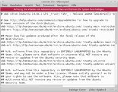

Mousepad
Dieser Artikel wurde für die folgenden Ubuntu-Versionen getestet:
Ubuntu 16.04 Xenial Xerus
Ubuntu 14.04 Trusty Tahr
Zum Verständnis dieses Artikels sind folgende Seiten hilfreich:
Mousepad ist der Standardeditor der Desktopumgebung Xfce. Das Programm basierte ursprünglich auf Leafpad, wurde aber für Version 0.3.0 von Grund auf überarbeitet und der Funktionsumfang hat sich deutlich von dieser Basis entfernt. Inzwischen unterstützt Mousepad viele Funktionen um als Texteditor auch für komplexere Anwendungsfälle in Frage zu kommen:
komplette Unterstützung des deutschen Tastaturlayouts
volle Schriftartenunterstützung
Reiter für mehrere Dokumente
Suchen und Ersetzen in geöffneten Dokumenten gleichzeitig
Zeilennummerierung und (ab 15.04) Seitenrand
Syntaxhervohebung mit unterschiedlichen Farbschemata
automatisches Einrücken
Textkonvertierungen
Einfügen als Spalte
Vorlagen
Drucken
Eine Rechtschreibprüfung ist bislang nicht vorhanden.
Installation¶
In Xubuntu gehört dieser Editor bis 11.10 und ab 13.04 wieder zur Standardinstallation. Ansonsten kann Mousepad über das gleichnamige Paket nachinstalliert werden [1] :
mousepad (universe)
 mit apturl
mit apturl
Paketliste zum Kopieren:
sudo apt-get install mousepad
sudo aptitude install mousepad
Das Programm ist anschließend in einem Anwendungsmenü unter "Zubehör" → "Mousepad" zu finden oder entsprechend über seinen Namen aufrufbar.
Benutzung in 14.04¶
| Mousepad in 14.04 mit Zeilennummern und Farbschema „Tango“ für die Syntaxhervorhebung |
Für die Benutzung dieses Programms sind Tastenkürzel wie bei den meisten Texteditoren fast unentbehrlich. Sämtliche Funktionen lassen sich aber auch mit der Maus in der Menüleiste ansteuern, wo ebenfalls die Belegung der Tastenkürzel angezeigt wird.
Datei¶
Unter dem Menüpunkt "Datei" können neue Dateien (auch aus Vorlagen) entweder in einem Reiter im gleichen oder in einem neuen Fenster angelegt werden. Die geöffneten Dokumente können einzeln oder alle zusammen gespeichert werden. Außerdem können hier die Reiter verwaltet und auf den Druckdialog zugegriffen werden.
Bearbeiten¶
Unter dem Menüpunkt "Bearbeiten" verbergen sich die bekannten Werkzeuge für das Kopieren, Ausschneiden und Einfügen von markierten Textbereichen oder der Zwischenablage. Zusätzlich finden sich hier die Suchfunktionen und die Menüeinträge für das Rückgängigmachen bzw. Wiederherstellen von Änderungen am Dokument.
Alternativ kann man einen Teil dieser Funktionen im Kontextmenü mit der Maus ( ) erreichen.
) erreichen.
Ansicht¶
Unter dem Menüpunk "Ansicht" kann man die Schriftart festlegen und bei Bedarf die Anzeige der Zeilennummern und der Statusleiste (de-)aktivieren. Die Statusleiste zeigt neben der Position des Textcursors nicht nur Informationen über den Dateityp und den Schreibmodus (Überschreiben/Einfügen), sondern letztere beiden lassen sich dort auch ändern.
Schriftart¶
Über "Ansicht" → "Schriftart" kann die Standardschriftart ausgewählt und Stil sowie Größe festgelegt werden. Eine Vorschau präsentiert die Auswahl und die Änderungen werden nach der Bestätigung über die Schaltfläche "OK" sofort wirksam.
Farbschema¶
Über "Ansicht" → "Farbschema" kann eine Farbgebung für das Textfeld ausgewählt werden. Dies ist besonders empfehlenswert, wenn man die Syntaxhervorhebung nutzen will, denn das standardmäßig eingesetzte Farbschema "Keine" unterstützt diese nicht.
Text¶
Unter dem Menüpunkt "Text" findet man Möglichkeiten markierten Text zu manipulieren. Folgende Funktionen stehen zur Verfügung:
Umwandlung:
Groß-/Kleinbuchstaben
Leerzeichen/Tabulatoren
Leerzeilen am Zeilenende entfernen
Buchstabenreihenfolge
Auswahl verschieben
Zeile oder Auswahl duplizieren
Einzug ändern
Dokument¶
Unter dem Menüpunkt "Dokument" findet man weitere nützliche Optionen für die Arbeit mit dem Programm:
Automatisches Einrücken
Kodierung des Zeilenendes
Tabulatorgröße
Zeilennummern
Dateityp
Über "Dateityp" lässt sich das gewünschte Format für die Syntaxvorherhebung einstellen, die bei einem aktivierten Farbschema angezeigt wird.
Navigation¶
Unter dem Menüpunkt "Navigation" kann man schnell in eine bestimmte Zeile/Spalte oder bequem zwischen den geöffneten Dokumenten wechseln.
Hilfe¶
Unter dem Menüpunk "Hilfe" lässt sich die Online-Hilfe aufrufen und Informationen zur Programmversion und den mitwirkenden Entwicklern einsehen.
Benutzung ab 15.04¶
| Mousepad in 16.04 mit Zeilennummern, Seitenrand, Leerzeichen, Reitern und Farbschema „Xubuntu Light“ für die Syntaxhervorhebung |
Mit der Überarbeitung für Version 0.3.0 wurde die aktive Entwicklung von Mousepad wieder aufgenommen und in Version 0.4.0 - welche ab 15.04 inklusive 16.04 in den Paketquellen ist - wurde die Menüleiste neu strukturiert und einige neue Funktionen wurden ergänzt. Darüber hinaus wird jetzt für die Oberfläche nicht mehr GTK+ 2 sondern Version 3 verwendet.
Menüleiste¶
"Bearbeiten" integriert den Menüpunk "Text" und zeigt den neuen Eintrag "Einstellungen"
"Suchen" wurde hinzugefügt und beherbergt jetzt alle Suchfunktionen aus "Bearbeiten"
"Ansicht" wurde erweitert um Einträge für das (De-)Aktivieren der "Menü-" und "Werkzeugleiste" sowie einem Eintrag für "Vollbild"
"Dokument" integriert den Menüpunkt "Navigation", der damit entfällt
Neue Funktionen¶
In der Version 0.4 bietet Mousepad einige Funktionen, die vorher nicht enthalten waren:
unter "Bearbeiten" → "Einstellungen" findet man jetzt einen Einstellungsdialog, in dem die Optionen aus den Menüpunkten "Ansicht" und "Dokument" zusätzlich untergebracht sind und einige neue ergänzt wurden:
Anzeige von Leerzeichen und Zeilenumbrüchen als Steuerzeichen
Seitenrand
Hervorheben von aktueller Zeile und Klammerpaaren
Umbrechen langer Zeilen
Verhalten der Tasten Pos1 und Ende
Konfiguration der Werkzeugleiste
Optionen zum Reiter-/Fensterverhalten
die Menüleiste kann ausgeblendet werden
eine Werkzeugleiste für gängige Funktionen kann eingeblendet werden
ein Vollbildmodus wird unterstützt
das Kontextmenü enthält jetzt alle Einträge aus dem Menüpunkt "Bearbeiten" mit Ausnahme von "Einstellungen"
Mousepad mit Root-Rechten nutzen¶
Sofern das Programm mit Root-Rechten gestartet wurde, um z.B. die sources.list zu bearbeiten, erscheint ein Warnhinweis. Dieser erinnert daran, dass man den Root-Zugriff benutzt und das eigene System beschädigen kann.
|  |
| Mousepad in 14.04 mit Root-Rechten |
| Mousepad in 16.04 mit Root-Rechten |
Tastenkürzel¶
| Tastenkürzel | ||
| Taste(n) 14.04 | Änderung ab 15.04 | Beschreibung |
| Strg + N | Neu | |
| ⇧ + Strg + N | Neu (in neuem Fenster) | |
| Strg + O | Öffnen... | |
| Strg + S | Speichern | |
| ⇧ + Strg + S | Speichern unter … | |
| Strg + P | ||
| Strg + D | Reiter (vom Fenster) lösen | |
| Strg + W | Reiter schließen | |
| Strg + Q | Fenster schließen | |
| Strg + Z | Aktion Rückgängig machen | |
| Strg + Y | Aktion Wiederholen | |
| Strg + X | Markierten Text ausschneiden | |
| Strg + C | Markierung in die Zwischenablage kopieren | |
| Strg + V | Inhalt der Zwischenablage einfügen | |
| Strg + F | Suchen | |
| F3 | Strg + G | Weitersuchen |
| ⇧ + F3 | ⇧ + Strg + G | Rückwärts suchen |
| Strg + R | Suchen und Ersetzen … | |
| Strg + T | Umstellen/Vertauschen der Buchstabenreihenfolge | |
| Strg + Bild ↑ | Zum vorherigen Reiter | |
| Strg + Bild ↓ | Zum nächsten Reiter | |
| Alt + | Wechseln zu Dokument # | |
| Strg + G | Strg + L | Gehe zu Zeile … |
| F1 | Hilfe | |
| F11 | Vollbild | |
 Übersichtsartikel
Übersichtsartikel- Erstellt mit Inyoka
-
 2004 – 2017 ubuntuusers.de • Einige Rechte vorbehalten
2004 – 2017 ubuntuusers.de • Einige Rechte vorbehalten
Lizenz • Kontakt • Datenschutz • Impressum • Serverstatus -
Serverhousing gespendet von